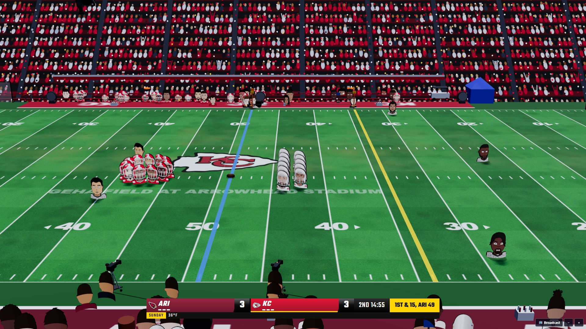
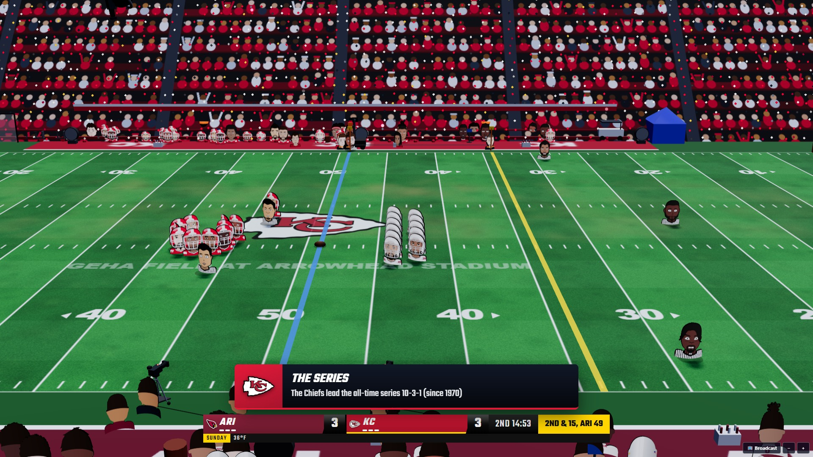
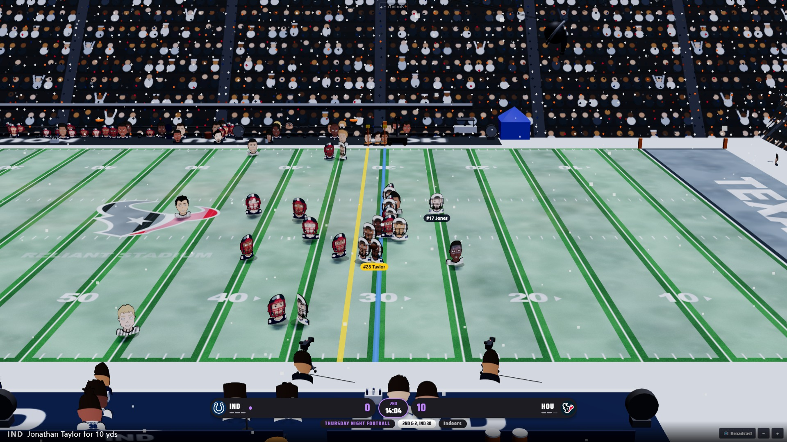
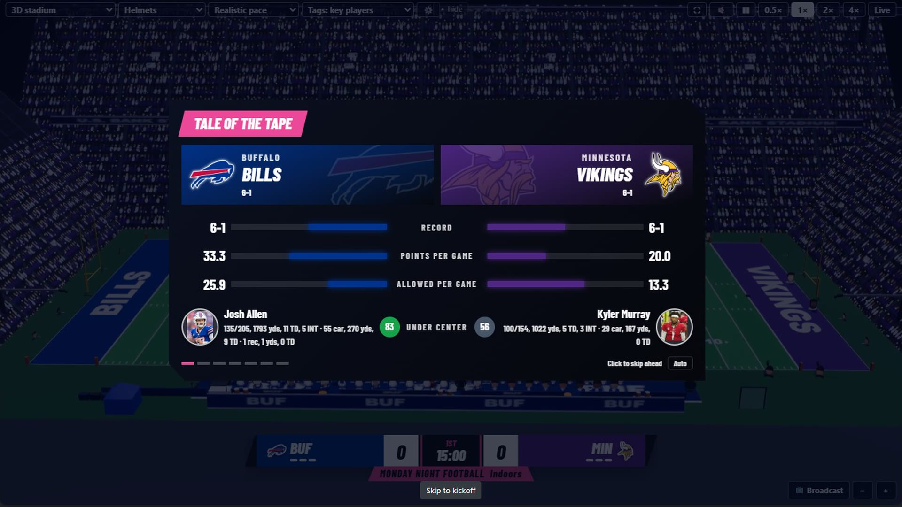
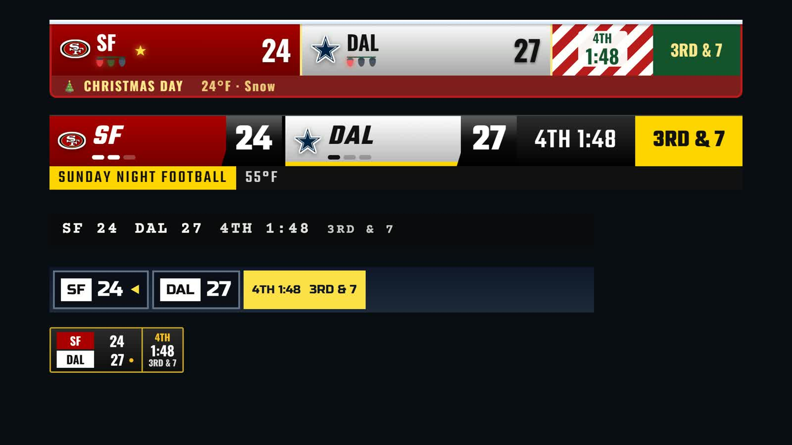

You've read the box score. Now watch it. Every game in your league, played out in a full 3D broadcast with real players, real stadiums and the right uniforms for the year.
LIVE
Out nowAlready have NFL History? Open it and click Play the alpha now on the announcement card; it updates itself, and Back to the regular mod switches you back any time. New here? Get NFL History first. It's an alpha: expect bugs, and tell us what you find.
01The broadcast
A game you can watch

Every snapYour real game, play by play, in a stadium built for that team.

The big momentsTouchdowns, replays, flags and injuries, on the play they happen.

Real conditionsAfternoon light, night games, rain and snow.

The whole showPregame, halftime, commercials and the crowd.

Every era's scoreboardFrom the 1970s to today, plus Thanksgiving, Christmas and more.
02Also new
In this release
Real jerseys on every playerPlayer pictures wear their team's real jersey from that season, from every era, number on the chest.
Jersey and logo historyEvery team's jersey eras and logos on its history page, with names on the back.
Championship bannersA banner for every title, with that game's Super Bowl logo. Click one to see it up close.
Every Super Bowl logoI through LXI, on the playoffs page and the banners.
The league calendarReal game dates and times, a team calendar, and a compact calendar on your dashboard.
03Good to know
What to expect
It's an alphaThe history mod is finished. Live Football is brand new, so it will have rough edges.
It comes with the modLive Football needs the mod. The league files for regular Football GM won't have it.
Phones use your Wi-FiRun the mod on your computer and open it on your phone over your home network.